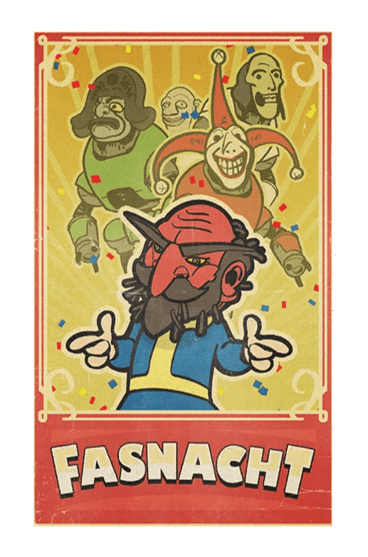
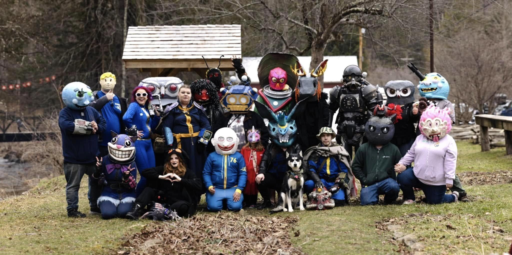

Fasnacht Day
イベントを開始するには、現実時間の毎時ちょうど（XX:00 AM/PM）にヘルヴェティアにいる司会者に話しかけます。
イベントが開始されると、サーバー内の全プレイヤーに通知され、マップにアイコンが表示されます。
司会者に話しかけてイベントを開始した後、プレイヤーは町にスポーンする8体のプロテクトロン行進者のうち5体を見つける必要があります。
各プロテクトロンはそれぞれの職業に対応したタスクを提示し、パレードを開始する前にすべてのタスクを完了する必要があります。
プロテクトロンとタスク
陽気な養蜂家 :
ハニーハウスを襲うハニービーストを排除する。（通常3体）幸せなろうそく職人 :
ハニーハウスの巣箱から蜜蝋を収集し、ろうそく職人に寄付する (0/10)。楽しそうな肉屋 :
主にリス、ニワトリ、オポッサム、ウサギなどの小動物から腸を収集し、肉屋のクーラーに寄付する (0/12)。陽気なパン屋 :
小川からラッドトードの卵を収集し、パントリーに寄付する (0/20)。陽気な歴史家 : 博物館に古いファスナハトのジョッキを持ってきて分析してもらう (0/10)。
楽しそうな音楽家 :
ステージにある3つの楽器を演奏し、メーターを満たす。歓喜の飾り付け係 :
納屋の飾り付けを手伝う (0/4)。メリーな木こり :
焚き火に木材を追加する (0/50)。
パレードの進行と防衛
パレード開始 :
5つのタスクすべてが完了し、5体のプロテクトロンが町の中心に集結すると、司会者が加わり、パレードがルートを開始します。第1波（ラッドトード）:
レストランの前で、ラッドトードの群れに襲われます。第2波（スーパーミュータント）:
木製の橋を渡った後、野原の中央でスーパーミュータント、ミュータントハウンド、自爆型のスーパーミュータントに襲撃されます。
特に自爆型はプロテクトロンに大きな脅威を与えます。第3波（スティングウィング/オオカミ）:
礼拝堂の前でパレードが停止すると、スティングウィングとオオカミの大群に襲われます。第4波 :
敵を排除した後、ランダムでボスが選出されます。
メガ・スロース、スーパーミュータント・ベヒモス、シーブスカッチ、オグア、グラフトン・モンスター、ブルーデビルのいずれか。
ボス戦と完了
敵を排除した後、ランダムでボスが選出されます。
ボス : メガ・スロース、スーパーミュータント・ベヒモス、シーブスカッチ、オグア、グラフトン・モンスター、ブルーデビルのいずれか。
成功条件 : ボスを倒し、少なくとも1体のプロテクトロンが行き残っている必要があります。全員が倒されるとイベントは失敗します。
イベント完了後、参加者にはランダムな星3レジェンダリー武器またはアーマー、および少なくとも1つのクラフト設計図またはレシピが報酬として与えられます。
又、ボスの死体からランダムなファスナハト・マスク1枚を取得できるようになります。
報酬

設計図：ビールスタインのショーケース（未習得の場合）
設計図：ファスナハトの記念品のビールスタイン（未習得の場合）
設計図：ハードマンのベルディスプレイラック - ベーシック（未習得の場合）
設計図：ファスナハトの柱ランタン01
設計図：ファスナハトの柱ランタン02
設計図：ファスナハトの旗ざお01
設計図：ファスナハトの旗ざお02
設計図：ファスナハトのリボン柱01
設計図：ファスナハトのリボン柱02
設計図：ファスナハトの備え付け旗01
設計図：ファスナハトの備え付け旗02
設計図：ファスナハトの備え付けリボン01
設計図：ファスナハトの備え付けリボン02
設計図：ファスナハトの枝飾り01
設計図：ファスナハトの枝飾り02
設計図：ファスナハトのヘルヴェティア飾り01
設計図：ファスナハトのヘルヴェティア飾り02
設計図：ファスナハトのパーティーリボン01
設計図：ファスナハトのパーティーリボン02
設計図：ファスナハトの垂らし雪結晶01
設計図：ファスナハトの垂らし雪結晶02
設計図：ファスナハトの垂らしリボン01
設計図：ファスナハトの垂らしリボン02
設計図：ファスナハトの紙吹雪の山01
設計図：ファスナハトの紙吹雪の山02
設計図：ファスナハトの風船01
設計図：ファスナハトの風船02
設計図：冬将軍の像
設計図：メガ・スロスの皮のラグ
設計図：メガ・スロスの剥製
設計図：ハードマンのベルディスプレイラック
設計図：ハードマンのベル - ファスナハト
設計図：ハードマンのベル - リンカーン
設計図：ヘルヴェティアの花のディスプレイ
設計図：スコーチビースト・クイーンのビールスタイン
設計図：ファスナハトの野菜人間のビールスタイン
設計図：蜜ロウのロウソク
設計図：電動バター撹拌機
設計図：フラワーボックス - アッシュ・ローズ
設計図：フラワーボックス - アスター
設計図：フラワーボックス - 突然変異のシダ
設計図：フラワーボックス - ツツジ
設計図：フラワーボックス - 煤の花
設計図：フラワリングボックス - アッシュ・ローズ
設計図：フラワリングボックス - アスター
設計図：フラワリングボックス - 突然変異のシダ
設計図：フラワリングボックス - ツツジ
設計図：フラワリングボックス - 煤の花
レシピ：ファスナハト・ドーナツ
レシピ：ファスナハトのソーセージ
ファスナハトのベレー帽
ファスナハトのスコーチビーストマスク
ファスナハトのスコーチビースト・クイーンマスク
ファスナハトのブタマスク
ファスナハトのユニコーンマスク
ファスナハトのミノタウロスマスク
ファスナハトのエイリアンマスク
ファスナハトのターキーマスク
ファスナハトのロボットマスク
ファスナハトのビッグフットマスク
ファスナハトのジャッカロープマスク
ファスナハトの冬人間マスク
ファスナハトのレイブンマスク
ファスナハトのデスクローマスク
ファスナハトのルーンマスク
ファスナハトのフィーンドマスク
ファスナハトのクレイジーな男マスク
ファスナハトのおどけたマスク
ファスナハトのデーモンマスク
ファスナハトのバラモンマスク
ファスナハトのハグマスク
ファスナハトのトウモロコシマスク
ファスナハトの魔女マスク
ファスナハトの兵士マスク
ファスナハトの笑う男マスク
ファスナハトの巨人マスク
ファスナハトのフクロウマスク
ファスナハトのミツバチマスク
ファスナハトのブルーデビルマスク
ファスナハトのスカルマスク
ファスナハトの道化師マスク
ファスナハトのゴブリンマスク
ファスナハトの太陽マスク
ファーザーウィンターのヘルメット
ファスナハトのキャプテンマスク
ファスナハトのボーンヘッドマスク
ファスナハトの光るミツバチマスク
ファスナハトの光るブルーデビルマスク
ファスナハトの光るスコーチビーストマスク
ファスナハトの光るスコーチビースト・クイーンマスク
ファスナハトの光るブタマスク
ファスナハトの光るユニコーンマスク
ファスナハトの光るミノタウロスマスク
ファスナハトの光るエイリアンマスク
ファスナハトの光るターキーマスク
ファスナハトの光るロボットマスク
ファスナハトの光る野菜人間マスク
ファスナハトの光るエイブマスク
ファスナハトの光るビッグフットマスク
ファスナハトの光るジャッカロープマスク
ファスナハトの光るスカルマスク
ファスナハトの光るフクロウマスク
ファスナハトの光る道化師マスク
ファスナハトの光るトウモロコシマスク
ファスナハトの光る太陽マスク
ファスナハトの光るキャプテンマスク
ファスナハトの光るボーンヘッドマスク
制作裏話

Fasnacht 2026 - Helvetia, WV
— Nerditbabe (@Nerditbabe) February 15, 2026
Look at all the Fallout friends 💙#Fasnacht #Helvetia #Fallout pic.twitter.com/NsmiZrgcao
ファスナハトの起源 :
「ファスナハト（Fasnacht）」は、スイス、ドイツ、オーストリアの人々によって祝われる毎年恒例のカーニバルであり、伝統的に悪魔、道化師、魔女、動物などを表すマスクを着用します。ウェストバージニアの伝統 :
ウェストバージニア州のヘルヴェティアでは、通常、懺悔の火曜日（Fat Tuesday）後の最初の週末に年に一度祝われ、焚き火の中で人形を燃やして終わります。パレードの音楽 :
ファスナハト・パレード中に流れる音楽は、2004年のインストゥルメンタル曲「One More Pils」です。
これはAndy Valeによって作曲され、APM Musicからライセンス供与されています。ゲーム内の音楽 :
オリジナル曲は1分10秒の長さですが、ゲーム内で使用されているバージョンは、15秒のクリップ2つで構成され、繰り返しエンドレスに再生されます。
プレイヤーもぜひ雰囲気を出すために仮面をかぶって参加しましょう！
報酬として「ファスナハトのマスク」が手に入ります。
マスクは沢山の種類がある為、コレクターの方は挑戦の価値ありです！
特に光るマスクは低確率のドロップとなっている為、毎回人が押しかけるイベントとなっています。
過去に一度だけ、一日光るマスク確定の日がありましたが、その日に24時間耐久して私は光るマスクをコンプリートしました。
This article uses material from the “Endor” article on the Star Wars wiki at Fandom and is licensed under the Creative Commons Attribution-Share Alike License.
コミュニティ維持のため、寄付を受け付けております。
This article was created by translating and editing Fasnacht Day from Nukapedia: The Fallout Wiki.
Licensed under the Creative Commons Attribution-Share Alike License (CC BY-SA 3.0).
© Overseer Mohi's Terminal — Fallout Lore Archive
> COMMENTS